多變數函數的微分
📌 本章要解決的核心問題
當一個量取決於多個獨立變數時——例如溫度取決於位置和時間、利潤取決於銷售量和廣告支出——我們該如何計算變化率？如何找到最大最小值？本章將單變數微積分的所有核心工具（導數、極限、鏈鎖律、極值檢驗）全面擴展到多變數世界，並引入全新的概念：偏導數、梯度、方向導數、Lagrange 乘數。
🔑 關鍵概念（10 條）
- 多變數函數：$z = f(x,y)$ 將平面上的點對應到空間中的高度——圖形是曲面
- 等高線與垂直截線：理解三維曲面的二維工具——等高線是地圖，截線是剖面
- 偏導數：$f_x = \frac{\partial f}{\partial x}$——固定其他變數，只對一個變數微分
- Clairaut 定理：只要混合二階偏導數連續，微分順序可交換：$f_{xy}=f_{yx}$
- 切平面：$z = f(x_0,y_0) + f_x(x_0,y_0)(x-x_0) + f_y(x_0,y_0)(y-y_0)$——單變數切線的推廣
- 鏈鎖律：$\frac{dz}{dt} = \frac{\partial z}{\partial x}\frac{dx}{dt} + \frac{\partial z}{\partial y}\frac{dy}{dt}$——每個中間變數貢獻一條路徑
- 梯度：$\nabla f = \langle f_x, f_y \rangle$——指向函數上升最快的方向
- 方向導數：$D_{\mathbf{u}}f = \nabla f \cdot \mathbf{u}$——沿任意方向（不只是座標軸）的變化率
- 二階導數檢驗：判別式 $D = f_{xx}f_{yy} - (f_{xy})^2$ 決定臨界點是極大、極小還是鞍點
- Lagrange 乘數：$\nabla f = \lambda \nabla g$——在約束條件下求極值的優雅方法
🧭 本章推理地圖
真實世界大多是多變數函數（§4.1）：溫度 T(x,y,z,t)、產量 Q(K,L) → 偏導數（§4.3）一次只對一個變數微分，其他視為常數 → 切平面（§4.4）是單變數切線的多維推廣，用於線性近似 → 多變數鏈鎖律（§4.5）處理複合關係，路徑圖決定項數 → 梯度 ∇f（§4.6）指向最陡上升方向，方向導數給出任意方向的變化率 → 極值問題（§4.7）用臨界點＋二階導數檢驗（Hessian）找最大最小 → Lagrange 乘數法（§4.8）在約束條件下求極值，經濟學與工程必備
4.1 多變數函數（Functions of Several Variables）
在日常生活中，我們經常遇到一個量取決於多個因素的情況
一個雙變數函數 $f$ 將定義域 $D \subseteq \mathbb{R}^2$ 中的每個有序對 $(x,y)$ 對應到恰好一個實數 $z = f(x,y)$。
寫法：$f: D \to \mathbb{R}$，其中 $D$ 是 $xy$ 平面上的一個區域，值域是 $f(D) \subseteq \mathbb{R}$。
定義域（domain）的判定與單變數函數類似——需要考慮分母不能為零、平方根號內必須非負、對數的真數必須為正等限制條件。但與單變數不同的是，雙變數函數的定義域是平面上的區域，可以用不等式來描述，例如 $x^2 + y^2 \leq 9$ 描述一個半徑為 3 的閉圓盤。
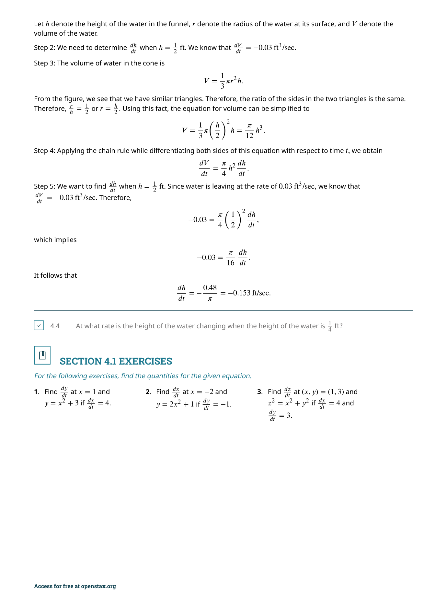
雙變數函數的圖形是三維空間中的曲面。每個點 $(x,y)$ 在定義域內對應到一個高度 $z = f(x,y)$，所有這些點 $(x,y,f(x,y))$ 的集合就是曲面。例如 $f(x,y) = \sqrt{9 - x^2 - y^2}$ 的圖形是一個上半球面，而 $f(x,y) = x^2 + y^2$ 的圖形是一個拋物面。
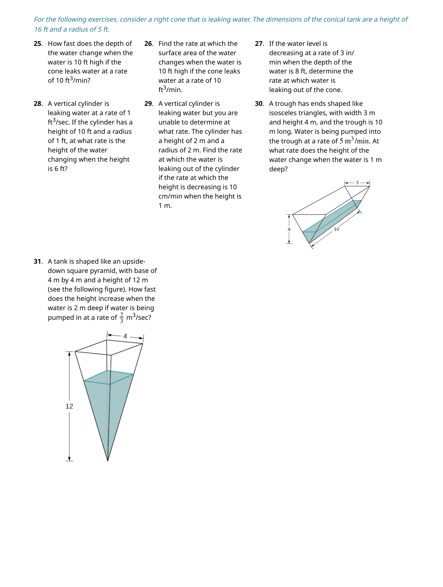
單變數函數 $y = f(x)$ 的圖形是一條曲線，我們可以直接在平面上畫出來觀察。但 $z = f(x,y)$ 的圖形是曲面，它存在於三維空間中，我們無法直接在紙上完整呈現。這就是為什麼我們需要等高線和垂直截線這兩種輔助工具——它們讓我們用二維的方式來理解三維的曲面。
等高線（Level Curves）
如果你曾經看過登山用的地形圖，你已經見過等高線了。在地形圖上，每條等高線連接所有海拔高度相同的點。對於函數 $f(x,y)$，等高線（或稱等值線）就是滿足 $f(x,y) = c$ 的所有點構成的曲線，其中 $c$ 是某個常數。不同的 $c$ 值產生一族曲線，合稱為等高線圖（contour map）。

等高線越密集的地方表示曲面越陡峭；等高線越稀疏的地方表示曲面越平緩。這和地形圖上山坡陡峭處等高線密集、平原處等高線稀疏的原理完全相同。
📝 範例
📝 範例 4.4：製作等高線圖給定 $f(x,y) = \sqrt{8 - 2x^2 - y^2}$，找出對應 $c = 2$ 的等高線，並製作等高線圖。
解：設 $f(x,y) = 2$，即 $\sqrt{8 - 2x^2 - y^2} = 2$。兩邊平方：$8 - 2x^2 - y^2 = 4$，整理得 $2x^2 + y^2 = 4$，即 $\frac{x^2}{2} + \frac{y^2}{4} = 1$——這是一個橢圓。一般來說，對任意 $c$（$0 \leq c \leq \sqrt{8}$），等高線為 $\frac{x^2}{(8-c^2)/2} + \frac{y^2}{8-c^2} = 1$，是一族同心橢圓。
垂直截線（Vertical Traces）
另一種理解曲面的方法是垂直截線：固定 $x = a$（或 $y = b$），觀察 $z = f(a, y)$（或 $z = f(x, b)$）作為單變數函數的圖形。這些截線是曲面與垂直平面 $x = a$ 的交線。例如對於 $f(x,y) = \sin x \cos y$，固定 $x = \pi/2$ 得到 $z = \cos y$（一條餘弦曲線），固定 $y = 0$ 得到 $z = \sin x$（一條正弦曲線）。
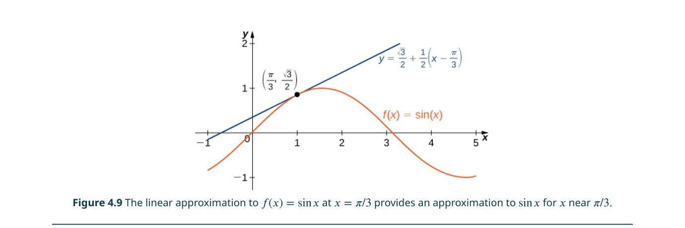
三變數以上的函數
當獨立變數超過兩個時，我們無法在物理空間中畫出圖形，但概念是完全類推的。對於三變數函數 $w = f(x,y,z)$，定義域是 $\mathbb{R}^3$ 中的一個區域，而等值面（level surface） $f(x,y,z) = c$ 取代了等高線的角色。例如 $f(x,y,z) = x^2 + y^2 + z^2$ 的等值面是一族同心球面。
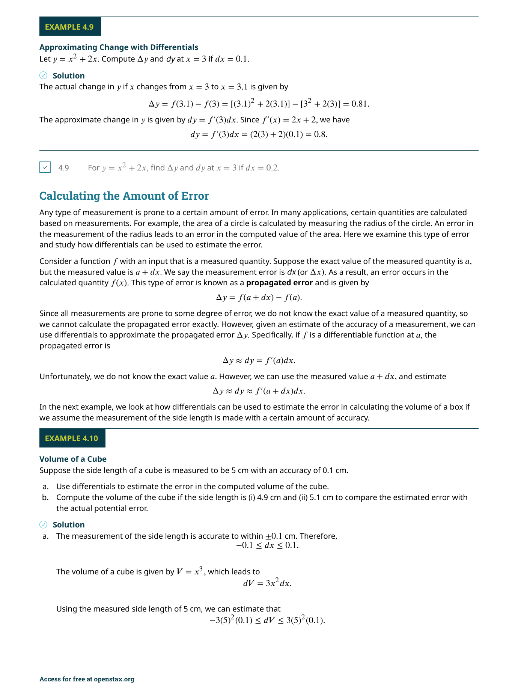
在單變數中，定義域和值域都是實數的子集（區間）。在雙變數中，定義域是 $\mathbb{R}^2$ 的子集（平面上的區域），但值域仍然是 $\mathbb{R}$ 的子集。初學者常犯的錯誤是用一維的思維來描述二維的定義域——例如把 $f(x,y) = \sqrt{9-x^2-y^2}$ 的定義域寫成 $[-3,3]$，正確寫法應該是 $\{(x,y) \mid x^2+y^2 \leq 9\}$。
4.2 極限與連續（Limits and Continuity）
在單變數微積分中
$\displaystyle\lim_{(x,y)\to(a,b)} f(x,y) = L$ 的意思是：對任意 $\varepsilon > 0$，存在 $\delta > 0$ 使得對於所有滿足 $0 < \sqrt{(x-a)^2 + (y-b)^2} < \delta$ 的 $(x,y)$，都有 $|f(x,y) - L| < \varepsilon$。
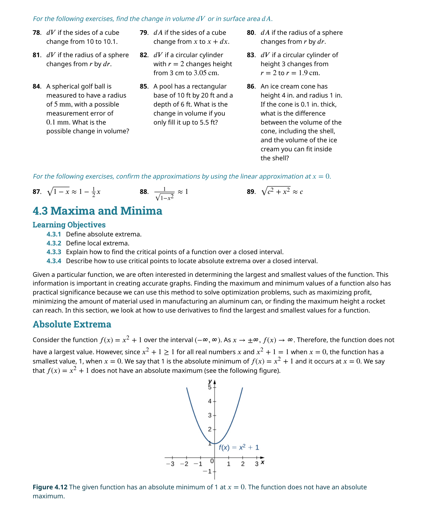
計算雙變數極限時，極限法則（和律、差律、積律、商律、冪律等）與單變數完全一致。只要函數在該點附近「行為良好」（沒有除以零等問題），可以直接代入求值。
📝 範例
📝 範例 4.8：計算雙變數極限求 $\displaystyle\lim_{(x,y)\to(2,1)} \frac{x^2 - 2xy + 3y^2}{x + y}$。
解：分母在 $(2,1)$ 處為 $2+1=3 \neq 0$，可直接代入：
分子 $= 2^2 - 2(2)(1) + 3(1)^2 = 4 - 4 + 3 = 3$，分母 $= 3$，因此極限值為 $1$。
路徑檢驗：極限不存在的最強武器
雙變數極限最關鍵的特性是：極限必須沿所有可能路徑都相等。如果沿兩條不同路徑趨近同一點得到不同的極限值，那麼極限就不存在。這個原理稱為路徑檢驗（path test）。
沿幾條路徑得到相同的極限值，不能保證極限存在——可能還有某條你沒想到的路徑（例如抛物線路徑 $y = x^2$）會給出不同的結果。路徑檢驗只能用來證明極限不存在。要證明極限存在，必須使用 ε-δ 定義或極坐標轉換等嚴格方法。
📝 範例
📝 範例 4.9：證明極限不存在證明 $\displaystyle\lim_{(x,y)\to(0,0)} \frac{2xy}{x^2 + y^2}$ 不存在。
解：沿路徑 $y = 0$（$x$ 軸）：$\frac{2x \cdot 0}{x^2 + 0} = 0 \to 0$。
沿路徑 $y = x$：$\frac{2x^2}{2x^2} = 1 \to 1$。
兩條路徑得到不同結果（$0$ vs $1$），因此極限不存在。

連續性
雙變數函數 $f(x,y)$ 在點 $(a,b)$ 連續若且唯若三個條件同時成立：(1) $f(a,b)$ 有定義；(2) $\lim_{(x,y)\to(a,b)} f(x,y)$ 存在；(3) 極限值等於函數值。連續函數的和、差、積、商（分母不為零）以及合成都是連續的。多項式函數在整個 $\mathbb{R}^2$ 上連續。
和單變數一樣，可微性蘊含連續性，但連續不保證可微。4.4 節中我們會看到一個經典反例：$f(x,y) = \frac{xy}{\sqrt{x^2+y^2}}$（補充定義 $f(0,0)=0$）在原點連續但不可微。
三變數以上的極限
對於三變數函數，$\delta$ 圓盤升級為 $\delta$ 球體：所有滿足 $\sqrt{(x-a)^2+(y-b)^2+(z-c)^2} < \delta$ 的點。極限法則和連續性的定義完全類推。例如 $\lim_{(x,y,z)\to(1,2,3)} \frac{xyz}{x+y+z}$ 可直接代入得 $\frac{6}{6}=1$。
4.3 偏導數（Partial Derivatives）
現在我們來到了本章最核心的概念
$f_x(x_0,y_0)$ 是曲面 $z = f(x,y)$ 在點 $(x_0,y_0,f(x_0,y_0))$ 處，沿著平行 $x$ 軸方向的切線斜率。$f_y(x_0,y_0)$ 則是沿著平行 $y$ 軸方向的切線斜率。這兩條切線張成了 4.4 節要討論的切平面。
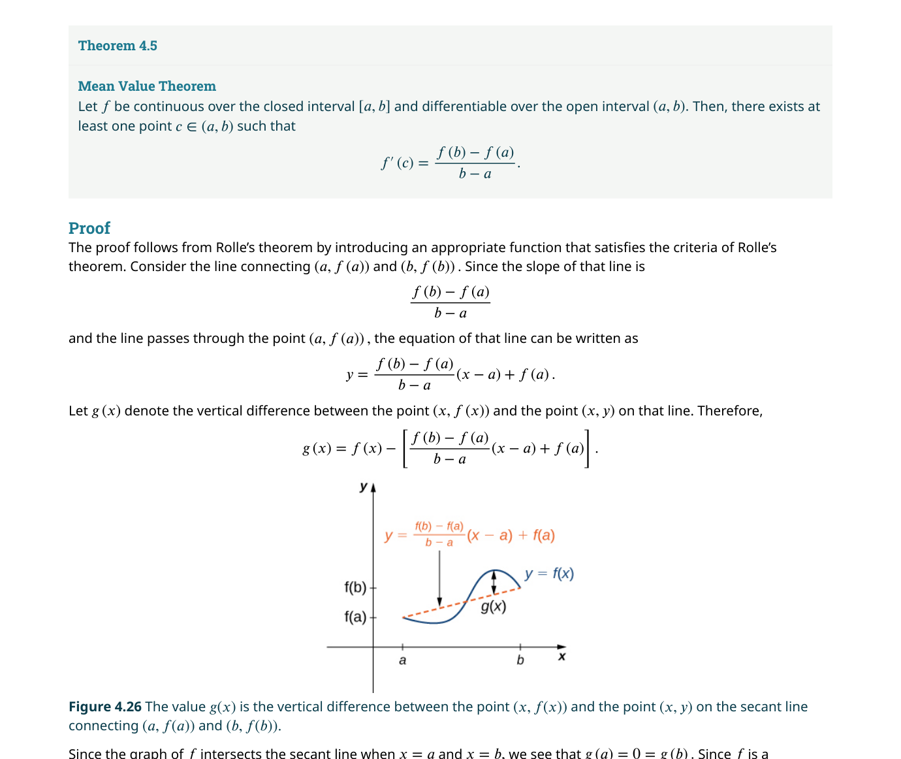
計算偏導數的實用方法
雖然定義很重要，但在實務上計算偏導數非常簡單：把你不需要的變數當作常數，然後照常微分。所有單變數的微分規則（冪律、乘積律、商律、鏈鎖律）全部適用。
📝 範例
📝 範例 4.15：計算偏導數求 $f(x,y) = x^3 - 4x^2y + 5y^2 - 2x + 6y - 7$ 的 $f_x$ 和 $f_y$。
解：
$f_x$：把 $y$ 當常數。$f_x = 3x^2 - 8xy + 0 - 2 + 0 - 0 = 3x^2 - 8xy - 2$。
$f_y$：把 $x$ 當常數。$f_y = 0 - 4x^2 + 10y - 0 + 6 - 0 = -4x^2 + 10y + 6$。
注意：不含該變數的項的導數為零。
高階偏導數與 Clairaut 定理
偏導數本身也是雙變數函數，可以再次微分。對 $f_x$ 再對 $x$ 微分得到 $f_{xx} = \frac{\partial^2 f}{\partial x^2}$；對 $f_x$ 對 $y$ 微分得到 $f_{xy} = \frac{\partial^2 f}{\partial y \partial x}$（混合偏導數）。
若 $f_{xy}$ 和 $f_{yx}$ 在含 $(a,b)$ 的開圓盤上連續，則
$f_{xy}$ 的意思是先對 $x$ 微分，再對 $y$ 微分——即 $\frac{\partial}{\partial y}\left(\frac{\partial f}{\partial x}\right)$。有些學生會誤以為是「先 $y$ 後 $x$」。雖然 Clairaut 定理保證結果相同，但符號的含義不應混淆。
偏微分方程式（PDE）
偏導數最重要的應用之一是偏微分方程式——描述物理現象的數學語言。三個經典的 PDE 是：
熱傳導方程式（一維）：$\displaystyle \frac{\partial u}{\partial t} = \alpha \frac{\partial^2 u}{\partial x^2}$
波動方程式（一維）：$\displaystyle \frac{\partial^2 u}{\partial t^2} = c^2 \frac{\partial^2 u}{\partial x^2}$
Laplace 方程式（二維）：$\displaystyle \frac{\partial^2 u}{\partial x^2} + \frac{\partial^2 u}{\partial y^2} = 0$
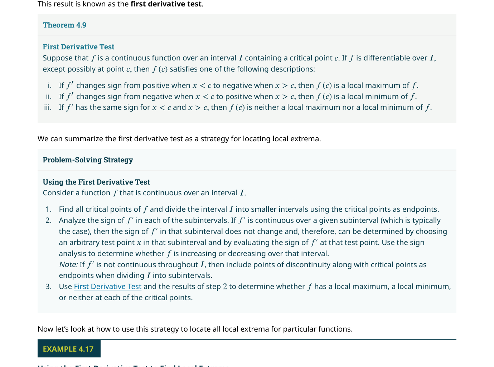
📝 範例
📝 範例：驗證 PDE 的解驗證 $u(x,t) = e^{-\pi^2 t}\sin(\pi x)$ 是熱傳導方程式 $\frac{\partial u}{\partial t} = \frac{\partial^2 u}{\partial x^2}$ 的解。
解：$u_t = -\pi^2 e^{-\pi^2 t}\sin(\pi x)$；$u_x = \pi e^{-\pi^2 t}\cos(\pi x)$；$u_{xx} = -\pi^2 e^{-\pi^2 t}\sin(\pi x)$。因此 $u_t = u_{xx}$，驗證完畢。
4.4 切平面與線性近似（Tangent Planes and Linear Approximations）
在單變數微積分中，可微函數在每一點都有一條切線
若 $f(x,y)$ 在 $(x_0,y_0)$ 可微，則曲面 $z = f(x,y)$ 在 $(x_0,y_0,f(x_0,y_0))$ 處的切平面為：

切平面的推導思路很直觀：$f_x(x_0,y_0)$ 給出沿 $x$ 方向的切線斜率，$f_y(x_0,y_0)$ 給出沿 $y$ 方向的切線斜率。這兩條切線張成一個平面，該平面的法向量就是這兩個切向量 $\langle 1, 0, f_x \rangle$ 和 $\langle 0, 1, f_y \rangle$ 的叉積：$\langle -f_x, -f_y, 1 \rangle$（或等價的 $\langle f_x, f_y, -1 \rangle$）。
📝 範例
📝 範例 4.21：求切平面求 $f(x,y) = 2x^2 - 3xy + y^2$ 在點 $(1,1,0)$ 處的切平面。
解：計算偏導數：$f_x = 4x - 3y$，$f_y = -3x + 2y$。在 $(1,1)$ 處：$f_x(1,1) = 1$，$f_y(1,1) = -1$。切平面：$z = 0 + 1(x-1) + (-1)(y-1) = x - y$。
線性近似
切平面的最直接應用是線性近似：在已知 $(x_0,y_0)$ 處的精確函數值時，對於附近的 $(x,y)$，用切平面來估計 $f(x,y)$：
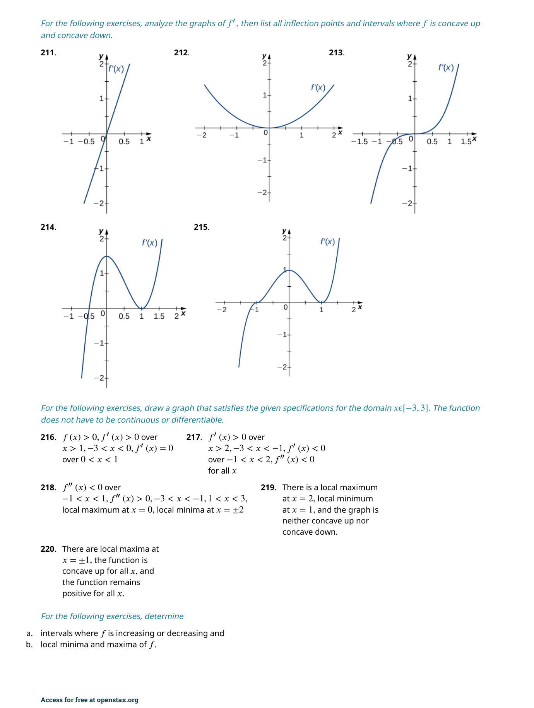
📝 範例
📝 範例 4.23：使用切平面近似用 $f(x,y) = \sqrt{9 - x^2 - y^2}$ 在 $(1,2)$ 的線性近似估計 $f(1.05, 1.9)$。
解：$f(1,2) = \sqrt{9-1-4} = 2$。$f_x = \frac{-x}{\sqrt{9-x^2-y^2}}$，$f_x(1,2) = -\frac{1}{2}$。$f_y = \frac{-y}{\sqrt{9-x^2-y^2}}$，$f_y(1,2) = -1$。
$L(x,y) = 2 - \frac{1}{2}(x-1) - 1(y-2)$。
$L(1.05, 1.9) = 2 - \frac{1}{2}(0.05) - (-0.1) = 2 - 0.025 + 0.1 = 2.075$。
可微性
雙變數函數 $f(x,y)$ 在 $(x_0,y_0)$ 可微的嚴格定義是：存在一個線性近似使得誤差項相對於 $\sqrt{(x-x_0)^2+(y-y_0)^2}$ 趨近於零。關鍵定理：如果 $f_x$ 和 $f_y$ 在 $(x_0,y_0)$ 的某個鄰域內存在且連續，則 $f$ 在該點可微。
函數 $f(x,y) = \begin{cases} \frac{xy}{x^2+y^2}, & (x,y) \neq (0,0) \\ 0, & (x,y)=(0,0) \end{cases}$ 在原點的兩個偏導數都存在（$f_x(0,0)=f_y(0,0)=0$），但該函數在原點不連續，因此不可微。偏導數的存在只是可微的必要條件而非充分條件。
全微分
全微分（total differential） $dz$ 用來近似當 $x$ 和 $y$ 同時變化時 $z = f(x,y)$ 的變化量：
4.5 鏈鎖律（The Chain Rule）
鏈鎖律是微分學中最強大的工具之一
若 $z = f(x,y)$，且 $x = x(t)$、$y = y(t)$ 都是 $t$ 的可微函數，則：
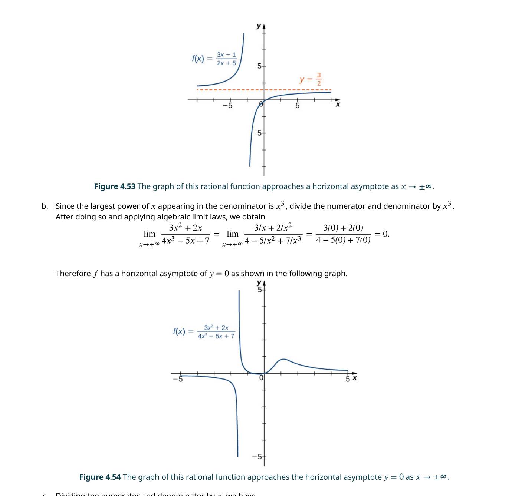
若 $z = f(x,y)$，且 $x = x(s,t)$、$y = y(s,t)$，則：
理解鏈鎖律的最佳工具是樹狀圖（tree diagram）：從最終變數（如 $z$）出發，畫出它依賴的所有中間變數（如 $x, y$），再從每個中間變數畫出它依賴的獨立變數（如 $s, t$）。對於每個從根到葉的路徑，將沿途的導數相乘；所有路徑的乘積相加即得最終的導數。
📝 範例
📝 範例：使用鏈鎖律設 $z = x^2y + 3xy^2$，其中 $x = \sin t$、$y = \cos t$。求 $\frac{dz}{dt}$ 在 $t = 0$ 處的值。
解：$\frac{\partial z}{\partial x} = 2xy + 3y^2$，$\frac{\partial z}{\partial y} = x^2 + 6xy$。$\frac{dx}{dt} = \cos t$，$\frac{dy}{dt} = -\sin t$。
$\frac{dz}{dt} = (2xy+3y^2)\cos t + (x^2+6xy)(-\sin t)$。
在 $t=0$：$x=0, y=1$，$\frac{dz}{dt} = (0+3)(1) + (0+0)(0) = 3$。
隱函數微分
鏈鎖律可以用來處理多變數的隱函數微分。若 $F(x,y) = 0$ 定義了 $y$ 為 $x$ 的隱函數，則：
這個公式是單變數隱函數微分的直接推廣。同樣地，對於 $F(x,y,z) = 0$ 定義的隱函數 $z = f(x,y)$：
公式中的負號來自於將 $F(x,y(x)) = 0$ 對 $x$ 全微分：$F_x + F_y \cdot y' = 0 \Rightarrow y' = -F_x/F_y$。記住「分母是你想求的那個變數的偏導數」。
單變數鏈鎖律只有一條路徑，多變數則可能有多條。若 $z = f(x,y)$ 且 $x = g(t)$、$y = h(t)$，則 $\frac{dz}{dt} = \frac{\partial f}{\partial x}\frac{dx}{dt} + \frac{\partial f}{\partial y}\frac{dy}{dt}$。 繪製變數依賴關係的樹狀圖可以避免漏項——每個從 $z$ 到 $t$ 的路徑對應一個項。
4.6 方向導數與梯度（Directional Derivatives and the Gradient）
偏導數告訴我們函數沿座標軸方向的變化率
設 $\mathbf{u} = \langle \cos\theta, \sin\theta \rangle$ 為單位向量。$f$ 在 $(x_0,y_0)$ 處沿 $\mathbf{u}$ 的方向導數為：

梯度（Gradient）
梯度是一個向量，由所有一階偏導數組成：
梯度的關鍵公式將方向導數表達為梯度與方向向量的點積：
1. $\nabla f$ 指向 $f$ 上升最快的方向（$\cos\phi = 1$）。
2. 最大方向導數的值等於 $|\nabla f|$（梯度的長度）。
3. $\nabla f$ 垂直於 $f$ 的等高線（level curve）。這是一個極為重要的幾何性質——梯度永遠是等高線的法向量。
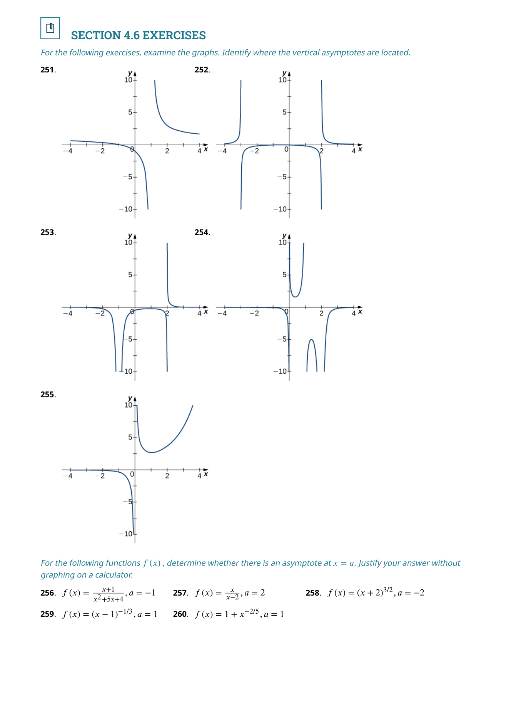
📝 範例
📝 範例 4.34：求最大方向導數求 $f(x,y) = xe^y$ 在點 $(2,0)$ 處方向導數最大的方向及最大值。
解：$f_x = e^y$，$f_y = xe^y$。在 $(2,0)$：$\nabla f(2,0) = \langle 1, 2 \rangle$。最大方向導數的方向即為 $\nabla f$ 方向：$\mathbf{u} = \frac{\langle 1,2 \rangle}{\sqrt{5}}$。最大值 $= |\nabla f| = \sqrt{1^2 + 2^2} = \sqrt{5}$。
🎮 互動模型：梯度場與等高線
拖動點觀察梯度向量（紅）始終垂直於等高線並指向函數增長最快的方向。
梯度與等高線的正交性
梯度垂直於等高線這一性質極其實用。如果我們知道 $f(x,y) = c$ 定義了一條曲線，則 $\nabla f$ 就是該曲線在每一點的法向量。這意味著我們可以立刻寫出切向量：將 $\nabla f = \langle f_x, f_y \rangle$ 的兩個分量交換並將其中一個取負號，得到 $\langle -f_y, f_x \rangle$（或 $\langle f_y, -f_x \rangle$）。
三維梯度與方向導數
對於三變數函數 $f(x,y,z)$，梯度定義為 $\nabla f = \langle f_x, f_y, f_z \rangle$，方向導數同樣是 $D_{\mathbf{u}}f = \nabla f \cdot \mathbf{u}$。三維梯度垂直於等值面（level surface），這使得我們可以快速求出等值面的切平面和法線。
梯度 $\nabla f$ 是一個向量，指向函數上升最快的方向，其大小等於該方向的方向導數。方向導數 $D_{\mathbf{u}}f = \nabla f \cdot \mathbf{u}$ 是一個純量。 常見混淆：梯度不是方向導數；梯度的大小是最大的方向導數（當 $\mathbf{u}$ 與 $\nabla f$ 同向時）。
4.7 極值問題（Maxima/Minima Problems）
求函數的最大值和最小值是微積分最重要的應用之一
臨界點
$(x_0,y_0)$ 是 $f$ 的臨界點若 $f_x(x_0,y_0) = 0$ 且 $f_y(x_0,y_0) = 0$，或其中至少一個偏導數不存在。和單變數一樣，極值只能發生在臨界點或邊界上。
📝 範例
📝 範例 4.38：求臨界點求 $f(x,y) = x^2 + y^2 - 2x - 6y + 14$ 的臨界點。
解：$f_x = 2x - 2 = 0 \Rightarrow x = 1$；$f_y = 2y - 6 = 0 \Rightarrow y = 3$。臨界點為 $(1, 3)$。這是一個完整的二次函數，圖形是開口向上的拋物面，$(1,3)$ 是最小值點。
二階導數檢驗
對於臨界點 $(x_0,y_0)$（其中 $f_x = f_y = 0$），定義判別式（discriminant）：
結論：
- $D > 0$ 且 $f_{xx} > 0$ ⇒ 局部極小值
- $D > 0$ 且 $f_{xx} < 0$ ⇒ 局部極大值
- $D < 0$ ⇒ 鞍點（saddle point）——沿一個方向是極大，沿另一個方向是極小
- $D = 0$ ⇒ 檢驗無法確定，需要其他方法
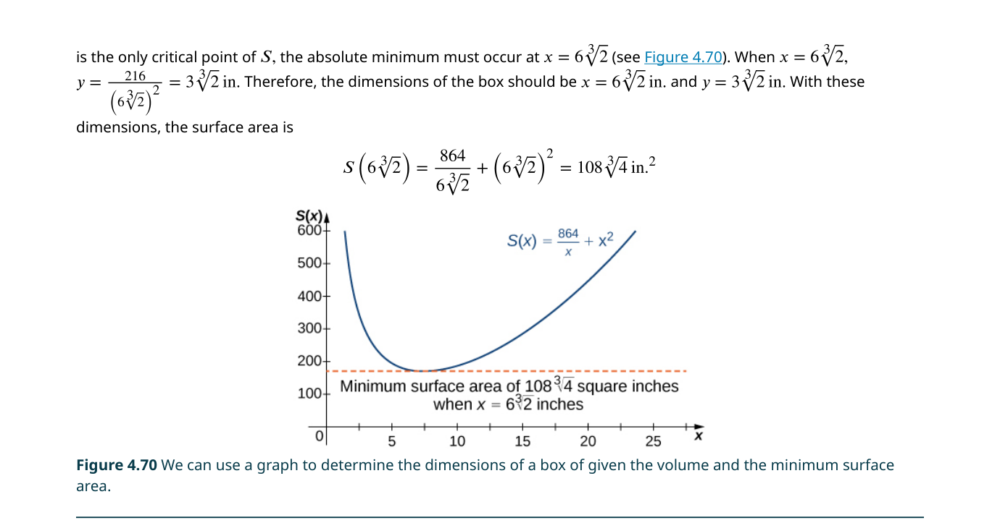
在單變數中，臨界點只能是極大、極小或拐點。但雙變數引入了鞍點——它在一個方向上是極大，在另一個方向上是極小。形象地說，鞍點像一個馬鞍：沿著馬背（前後方向）是最低點，沿著馬的兩側（左右方向）是最高點。$D < 0$ 是鞍點的充分條件。
📝 範例
📝 範例：二階導數檢驗求 $f(x,y) = x^3 - 3xy + y^3$ 的所有臨界點並分類。
解：$f_x = 3x^2 - 3y = 0 \Rightarrow y = x^2$。$f_y = -3x + 3y^2 = 0 \Rightarrow x = y^2$。
代入：$x = (x^2)^2 = x^4 \Rightarrow x(x^3-1) = 0 \Rightarrow x = 0$ 或 $x = 1$。
臨界點：$(0,0)$ 和 $(1,1)$。
$f_{xx} = 6x$，$f_{yy} = 6y$，$f_{xy} = -3$。
在 $(0,0)$：$D = 0 \cdot 0 - (-3)^2 = -9 < 0$ ⇒ 鞍點。
在 $(1,1)$：$f_{xx}=6$，$f_{yy}=6$，$D = 36 - 9 = 27 > 0$，$f_{xx} > 0$ ⇒ 局部極小值，$f(1,1) = -1$。
絕對極值
在封閉有界的定義域上求絕對極值，必須同時檢查：(1) 內部的臨界點；(2) 邊界上的極值（通常需要將邊界參數化，轉化為單變數問題）。比較所有候選點的函數值，最大者為絕對極大，最小者為絕對極小。
這對應於單變數的極值定理：在閉區間上的連續函數必有絕對極值。在雙變數中，「閉區間」推廣為「封閉有界集」（compact set）。如果定義域是開集或無界的，函數可能根本沒有極值——例如 $f(x,y) = x^2 + y^2$ 在整個 $\mathbb{R}^2$ 上有最小值 $0$（在原點）但沒有最大值。
4.8 Lagrange 乘數法（Lagrange Multipliers）
到目前為止我們處理的是無約束最佳化問題
要在約束 $g(x,y) = 0$ 下求 $f(x,y)$ 的極值，解以下聯立方程組：
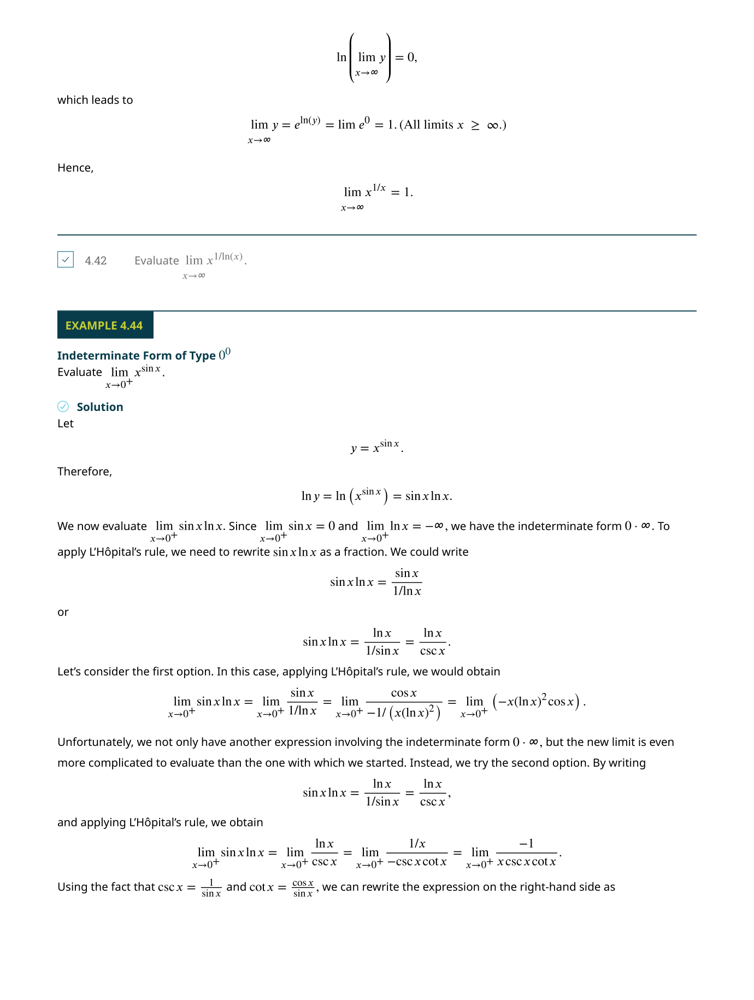
幾何直覺
Lagrange 乘數法背後的直覺非常優美：在約束曲線 $g(x,y) = 0$ 上走動時，$f$ 的值會改變。當我們到達一個極值點時，$f$ 在該點的梯度必須垂直於約束曲線——否則我們可以沿著曲線繼續走動來增加或減少 $f$。但 $g$ 的梯度 $\nabla g$ 本身就垂直於約束曲線。因此，在極值點處 $\nabla f$ 必須與 $\nabla g$ 平行，即存在某個常數 $\lambda$ 使得 $\nabla f = \lambda \nabla g$。
這個方法將一個有約束的最佳化問題轉化為一個無約束的方程組求解問題——我們不需要顯式地從約束中解出一個變數代入目標函數。當約束條件很複雜、難以顯式求解時，Lagrange 乘數法的優勢尤其明顯。
📝 範例
📝 範例 4.42：使用 Lagrange 乘數求 $f(x,y) = x^2 + y^2$ 在約束 $x + y = 6$ 下的最小值。
解：設 $g(x,y) = x + y - 6 = 0$。$\nabla f = \langle 2x, 2y \rangle$，$\nabla g = \langle 1, 1 \rangle$。
$\nabla f = \lambda \nabla g \Rightarrow 2x = \lambda,\; 2y = \lambda \Rightarrow x = y$。
代入約束：$x + x = 6 \Rightarrow x = 3, y = 3$。最小值 $f(3,3) = 18$。
多約束與多變數
Lagrange 乘數法可以直接推廣到更多變數和更多約束。對於三變數函數 $f(x,y,z)$ 和單一約束 $g(x,y,z) = 0$：$\nabla f = \lambda \nabla g$。對於兩個約束 $g(x,y,z) = 0$ 和 $h(x,y,z) = 0$，則引入兩個乘數 $\lambda, \mu$：$\nabla f = \lambda \nabla g + \mu \nabla h$。
📝 範例
📝 範例 4.43：高爾夫球利潤最大化Pro-T 公司的利潤函數為 $z = 48x - 3x^2 + 40y - 2y^2 - 2xy$（千美元），其中 $x$ 為每月銷售量（千顆），$y$ 為廣告時數。預算約束為 $20x + 4y = 216$。求最大利潤。
解：設 $g(x,y) = 20x + 4y - 216 = 0$（或化簡為 $5x + y - 54 = 0$）。
$\nabla f = \langle 48 - 6x - 2y,\; 40 - 4y - 2x \rangle$，$\nabla g = \langle 5, 1 \rangle$。
$48 - 6x - 2y = 5\lambda$，$40 - 4y - 2x = \lambda$。
從第二式得 $\lambda = 40 - 4y - 2x$，代入第一式並與約束 $5x + y = 54$ 聯立求解得 $x = 10, y = 4$。最大利潤 $f(10,4) \approx 361（千美元）。
Lagrange 乘數法只找出候選點——你還需要比較所有候選點的函數值來確定最大／最小值。此外，該方法要求 $\nabla g \neq \mathbf{0}$ 在約束曲線上（約束條件正則）。 若 $\nabla g = \mathbf{0}$ 在某些點成立，這些點需單獨檢查；Lagrange 乘數法可能遺漏它們。
Lagrange 乘數的經濟意涵：乘數 $\lambda$ 有具體的物理/經濟意義——它代表約束條件放鬆一個單位時，目標函數最優值的變化量（「影子價格」）。例如在預算約束下最大化效用時，$\lambda$ 代表增加一元預算能帶來的額外效用。這個詮釋使 Lagrange 乘數法不只是計算工具，更是理解「約束的代價」的理論框架。
📋 關鍵概念回顧（Key Concepts）
- 多變數函數：$z=f(x,y)$ 接受兩個（或多個）輸入，產生一個輸出；定義域是 $\mathbb{R}^2$ 的子集，值域是 $\mathbb{R}$ 的子集
- 等高線與等高面：$f(x,y)=c$ 定義一條等高線（level curve）；$f(x,y,z)=c$ 定義一個等高面——兩者都是可視化多變數函數的關鍵工具
- 極限與連續：多變數的極限要求沿所有可能路徑趨近同一點時函數值都相同；若兩條不同路徑給出不同極限，則極限不存在
- 偏導數：$f_x = \partial f/\partial x$ 將 $y$ 固定為常數後對 $x$ 求導；$f_y$ 同理——這是將多變數問題轉化為單變數問題的關鍵技術
- Clairaut 定理：若 $f_{xy}$ 和 $f_{yx}$ 在區域上連續，則 $f_{xy}=f_{yx}$——混合偏導數與微分次序無關
- 切平面與線性近似：$z = f(x_0,y_0) + f_x(x-x_0) + f_y(y-y_0)$ 是曲面在 $(x_0,y_0)$ 的最佳線性近似；可微性意味著誤差項比距離更快趨零
- 多變數鏈鎖律：若 $z=f(x,y)$ 且 $x,y$ 都是 $t$ 的函數，則 $\frac{dz}{dt} = \frac{\partial z}{\partial x}\frac{dx}{dt} + \frac{\partial z}{\partial y}\frac{dy}{dt}$（樹狀圖是組織偏導數項的有效工具）
- 方向導數：$D_{\mathbf{u}}f = \nabla f \cdot \mathbf{u}$（$\mathbf{u}$ 為單位向量）——它量化了函數在任意指定方向上的瞬時變化率
- 梯度：$\nabla f = \langle f_x, f_y \rangle$ 指向函數增長最快的方向，且垂直於等高線；其長度 $|\nabla f|$ 等於最大方向導數
- 臨界點與判別式：$D = f_{xx}f_{yy} - f_{xy}^2$。若 $D>0$ 且 $f_{xx}>0$→局部極小；$D>0$ 且 $f_{xx}<0$→局部極大；$D<0$→鞍點
- 閉區域極值：連續函數在閉有界區域上必有絕對極大和絕對極小——發生在內部的臨界點或邊界上（需分別檢驗）
- Lagrange 乘數法：在約束 $g(x,y)=0$ 下求 $f$ 的極值，解 $\nabla f = \lambda \nabla g$。$\lambda$（Lagrange 乘數）衡量放鬆約束時目標函數的變化率
📐 關鍵公式（Key Equations）
| 公式 | 說明 |
|---|---|
| $$f_x = \lim_{h \to 0} \frac{f(x+h,y)-f(x,y)}{h}$$ | 偏導數定義（對 $x$） |
| $$dz = f_x\,dx + f_y\,dy$$ | 全微分 |
| $$z = f(x_0,y_0) + f_x(x-x_0) + f_y(y-y_0)$$ | 切平面方程式 |
| $$\frac{dz}{dt} = \frac{\partial z}{\partial x}\frac{dx}{dt} + \frac{\partial z}{\partial y}\frac{dy}{dt}$$ | 鏈鎖律（一個獨立變數） |
| $$D_{\mathbf{u}}f = \nabla f \cdot \mathbf{u} = f_x u_1 + f_y u_2$$ | 方向導數 |
| $$\nabla f = \langle f_x, f_y \rangle$$ | 梯度向量 |
| $$D = f_{xx}f_{yy} - f_{xy}^2$$ | 二階導數檢驗判別式 |
| $$\nabla f = \lambda \nabla g,\quad g(x,y)=0$$ | Lagrange 乘數法 |
本章摘要
📋 關鍵公式速查
| 概念 | 公式 |
|---|---|
| 偏導數（對 $x$） | $f_x = \lim_{h\to 0} \frac{f(x+h,y)-f(x,y)}{h}$ |
| 偏導數（對 $y$） | $f_y = \lim_{h\to 0} \frac{f(x,y+h)-f(x,y)}{h}$ |
| Clairaut 定理 | $f_{xy} = f_{yx}$（若連續） |
| 切平面 | $z = f(x_0,y_0) + f_x(x-x_0) + f_y(y-y_0)$ |
| 全微分 | $dz = f_x\,dx + f_y\,dy$ |
| 鏈鎖律（一個獨立變數） | $\frac{dz}{dt} = \frac{\partial z}{\partial x}\frac{dx}{dt} + \frac{\partial z}{\partial y}\frac{dy}{dt}$ |
| 鏈鎖律（兩個獨立變數） | $\frac{\partial z}{\partial s} = \frac{\partial z}{\partial x}\frac{\partial x}{\partial s} + \frac{\partial z}{\partial y}\frac{\partial y}{\partial s}$ |
| 隱函數微分 | $\frac{dy}{dx} = -\frac{F_x}{F_y}$ |
| 方向導數 | $D_{\mathbf{u}}f = \nabla f \cdot \mathbf{u} = |\nabla f|\cos\phi$ |
| 梯度（二維） | $\nabla f = \langle f_x, f_y \rangle$ |
| 二階導數判別式 | $D = f_{xx}f_{yy} - (f_{xy})^2$ |
| Lagrange 乘數法 | $\nabla f = \lambda \nabla g,\; g = 0$ |
各節核心要點
4.1 多變數函數：雙變數函數 $z = f(x,y)$ 的圖形是曲面。定義域是平面上的區域。等高線 $f(x,y)=c$ 和垂直截線 $x=a$（或 $y=b$）是理解曲面的兩種基本工具。三變數函數的等值面取代了等高線。
4.2 極限與連續：雙變數極限要求沿所有路徑趨近同一點時得到相同的極限值。路徑檢驗可證明極限不存在。連續函數的和、差、積、商（分母不為零）和合成皆連續。
4.3 偏導數：偏導數是「固定其他變數後對一個變數微分」。Clairaut 定理保證在連續條件下混合偏導數的微分順序可交換。偏微分方程式（熱傳導、波動、Laplace）是偏導數最重要的應用。
4.4 切平面與線性近似：切平面是單變數切線的推廣。線性近似 $L(x,y)$ 用切平面來估計附近的函數值。可微性要求誤差項比距離更快趨近於零。全微分 $dz$ 用於近似函數的變化量和誤差傳播。
4.5 鏈鎖律：多變數鏈鎖律的本質是「所有路徑的貢獻之和」。樹狀圖幫助追蹤每個獨立變數透過哪些中間變數影響最終函數。隱函數微分公式 $\frac{dy}{dx} = -F_x/F_y$ 是鏈鎖律的直接應用。
4.6 方向導數與梯度：梯度 $\nabla f$ 是方向導數的核心。$D_{\mathbf{u}}f = \nabla f \cdot \mathbf{u}$。梯度指向函數上升最快的方向，其長度等於最大方向導數。梯度永遠垂直於等高線（二維）或等值面（三維）。
4.7 極值問題：臨界點滿足 $f_x = f_y = 0$。二階導數檢驗使用判別式 $D = f_{xx}f_{yy} - f_{xy}^2$ 來分類：$D>0$ 且 $f_{xx}>0$ 為極小、$D>0$ 且 $f_{xx}<0$ 為極大、$D<0$ 為鞍點。絕對極值需同時檢查內部和邊界。
4.8 Lagrange 乘數法：在約束 $g(x,y)=0$ 下求 $f$ 的極值，解 $\nabla f = \lambda \nabla g$。幾何意義：極值發生在 $f$ 的等高線與約束曲線相切之處（梯度平行）。可推廣到多變數和多約束。
初學者常見錯誤
$f_{xy}$ 的意思是先 $x$ 後 $y$（即 $\frac{\partial}{\partial y}(\frac{\partial f}{\partial x})$），而不是「先 $y$ 後 $x$」。許多學生按照閱讀順序（從左到右）誤以為是先 $y$ 後 $x$。雖然 Clairaut 定理保證在連續條件下 $f_{xy} = f_{yx}$，但記號的含義是固定的。記憶法：$f_{xy} = (f_x)_y$——先對 $x$ 微分得到 $f_x$，再對 $y$ 微分。
沿 $y=0$、$x=0$、$y=x$ 三條直線路徑得到相同的極限值，不能證明極限存在。要證明極限存在，必須使用 ε-δ 定義或極坐標轉換。經典陷阱：$\lim_{(x,y)\to(0,0)} \frac{x^2y}{x^4+y^2}$ 沿所有直線路徑 $y=mx$ 都得到 $0$，但沿抛物線 $y=x^2$ 得到 $\frac{1}{2}$，因此極限不存在。
這可能是本章最常見的誤解。函數 $f(x,y) = \frac{xy}{\sqrt{x^2+y^2}}$（$f(0,0)=0$）在原點的兩個偏導數都存在（皆為 $0$），但該函數在原點不連續，因此不可微。可微性要求的不只是偏導數的存在，而是切平面能夠良好地近似函數。實務上，如果偏導數在該點的某個鄰域內存在且連續，則函數可微。
若 $z = f(x,y)$ 且 $x = x(s,t), y = y(s,t)$，則 $\frac{\partial z}{\partial s}$ 的公式中有兩項：$\frac{\partial z}{\partial x}\frac{\partial x}{\partial s} + \frac{\partial z}{\partial y}\frac{\partial y}{\partial s}$。初學者常只寫第一項而漏掉第二項。規則：每個中間變數（$x, y$）如果依賴於獨立變數 $s$，就必須貢獻一項。畫樹狀圖可以有效避免遺漏。
✅ 自我檢測（Self-Check）
完成以下題目檢驗你對本章核心概念的掌握程度。點擊展開查看答案。
題 1：偏導數計算
設 $f(x,y) = e^{xy}\sin(x+y)$。求 $f_x$ 和 $f_y$。
答案：
$f_x = ye^{xy}\sin(x+y) + e^{xy}\cos(x+y) = e^{xy}[y\sin(x+y) + \cos(x+y)]$。
$f_y = xe^{xy}\sin(x+y) + e^{xy}\cos(x+y) = e^{xy}[x\sin(x+y) + \cos(x+y)]$。
題 2：梯度與方向導數
設 $f(x,y) = x^2 + y^2$。求 (a) 在點 $(1,2)$ 處的梯度 $\nabla f(1,2)$；(b) 沿方向 $\mathbf{u} = \langle \frac{3}{5}, \frac{4}{5} \rangle$ 的方向導數。
答案：
(a) $\nabla f = \langle 2x, 2y \rangle$，$\nabla f(1,2) = \langle 2, 4 \rangle$。
(b) $D_{\mathbf{u}}f(1,2) = \nabla f(1,2) \cdot \mathbf{u} = 2\cdot\frac{3}{5} + 4\cdot\frac{4}{5} = \frac{6}{5} + \frac{16}{5} = \frac{22}{5}$。
題 3：切平面方程式
求曲面 $z = x^2 + y^2$ 在點 $(1,1,2)$ 處的切平面方程式。
答案：
$f_x = 2x$，$f_y = 2y$。在 $(1,1)$：$f_x = 2$，$f_y = 2$。
切平面：$z - 2 = 2(x-1) + 2(y-1)$，即 $z = 2x + 2y - 2$。
題 4：多變數鏈鎖律
設 $z = x^2y$，其中 $x = \sin t$，$y = \cos t$。用鏈鎖律求 $\frac{dz}{dt}$。
答案：
$\frac{dz}{dt} = \frac{\partial z}{\partial x}\frac{dx}{dt} + \frac{\partial z}{\partial y}\frac{dy}{dt} = (2xy)(\cos t) + (x^2)(-\sin t)$。
代入 $x=\sin t$，$y=\cos t$：$= 2\sin t\cos t \cdot \cos t - \sin^2 t \cdot \sin t = 2\sin t\cos^2 t - \sin^3 t$。
題 5：Lagrange 乘數法
用 Lagrange 乘數法求 $f(x,y) = xy$ 在約束 $x^2 + y^2 = 1$ 下的極值。
答案：
設 $g(x,y) = x^2 + y^2 - 1 = 0$。$\nabla f = \lambda \nabla g$ 給出 $\langle y, x \rangle = \lambda \langle 2x, 2y \rangle$。
即 $y = 2\lambda x$ 且 $x = 2\lambda y$。消去 $\lambda$：$y/x = x/y$，得 $y^2 = x^2$，$y = \pm x$。
代入約束 $x^2 + y^2 = 1$：$2x^2 = 1$，$x = \pm 1/\sqrt{2}$。
四點：$(\pm 1/\sqrt{2}, \pm 1/\sqrt{2})$。最大值 $f = 1/2$（同號），最小值 $f = -1/2$（異號）。
推導與假設
切平面方程式的推導
切平面的推導是理解線性近似的關鍵。曲面 $z = f(x,y)$ 在 $(x_0,y_0)$ 處有兩條特殊的切線：
1. 沿 $x$ 方向的切線：在平面 $y = y_0$ 上，曲線為 $z = f(x, y_0)$，切線斜率為 $f_x(x_0,y_0)$。切線參數式：$\mathbf{r}_x = \langle x_0, y_0, f(x_0,y_0) \rangle + t\langle 1, 0, f_x \rangle$。
2. 沿 $y$ 方向的切線：在平面 $x = x_0$ 上，曲線為 $z = f(x_0, y)$，切線斜率為 $f_y(x_0,y_0)$。切線參數式：$\mathbf{r}_y = \langle x_0, y_0, f(x_0,y_0) \rangle + s\langle 0, 1, f_y \rangle$。
這兩條切線的方向向量為 $\mathbf{v}_1 = \langle 1, 0, f_x \rangle$ 和 $\mathbf{v}_2 = \langle 0, 1, f_y \rangle$。它們張成的平面的法向量為兩者的叉積：
$\mathbf{n} = \mathbf{v}_1 \times \mathbf{v}_2 = \begin{vmatrix} \mathbf{i} & \mathbf{j} & \mathbf{k} \\ 1 & 0 & f_x \\ 0 & 1 & f_y \end{vmatrix} = \langle -f_x, -f_y, 1 \rangle$（或等價的 $\langle f_x, f_y, -1 \rangle$）。
使用平面的點法式：$\langle f_x, f_y, -1 \rangle \cdot \langle x-x_0, y-y_0, z-f(x_0,y_0) \rangle = 0$，展開得：
$f_x(x-x_0) + f_y(y-y_0) - (z - f(x_0,y_0)) = 0$
移項即得：$z = f(x_0,y_0) + f_x(x_0,y_0)(x-x_0) + f_y(x_0,y_0)(y-y_0)$。∎
Lagrange 乘數法的幾何推導
考慮在約束 $g(x,y) = 0$ 下最大化 $f(x,y)$。約束定義了一條曲線 $C$。我們沿 $C$ 走動，觀察 $f$ 值的變化。
設 $\mathbf{r}(t) = \langle x(t), y(t) \rangle$ 是 $C$ 的參數化（即 $g(x(t),y(t)) = 0$ 對所有 $t$）。沿 $C$ 上 $f$ 的變化率為：
$\frac{d}{dt}f(x(t),y(t)) = f_x x'(t) + f_y y'(t) = \nabla f \cdot \mathbf{r}'(t)$。
在 $f$ 的極值點處，$f$ 沿 $C$ 的變化率必須為零（否則可以沿 $C$ 往前走來增加 $f$ 或後退來減少 $f$）。因此 $\nabla f \cdot \mathbf{r}'(t) = 0$。
但 $\mathbf{r}'(t)$ 是 $C$ 的切向量。同時，對 $g(x(t),y(t)) = 0$ 微分得 $\nabla g \cdot \mathbf{r}'(t) = 0$，所以 $\nabla g$ 也垂直於 $\mathbf{r}'(t)$。
在二維中，垂直於同一向量的兩個向量必然平行：$\nabla f = \lambda \nabla g$。這就是 Lagrange 乘數法的核心。∎
梯度指向最陡上升方向的證明
方向導數：$D_{\mathbf{u}}f = \nabla f \cdot \mathbf{u} = |\nabla f| |\mathbf{u}| \cos\phi = |\nabla f| \cos\phi$，其中 $\phi$ 是 $\nabla f$ 和 $\mathbf{u}$ 的夾角。
因為 $|\nabla f|$ 在給定點是固定的正數（假設非零），$D_{\mathbf{u}}f$ 的最大值發生在 $\cos\phi = 1$，即 $\phi = 0$——$\mathbf{u}$ 與 $\nabla f$ 同方向。此時 $D_{\mathbf{u}}f = |\nabla f|$。
同理，最小值發生在 $\cos\phi = -1$，即 $\phi = \pi$——$\mathbf{u}$ 與 $\nabla f$ 反方向。此時 $D_{\mathbf{u}}f = -|\nabla f|$。∎
延伸資源
- OpenStax Calculus Vol 3 第 4 章完整原文（含所有習題解答）：openstax.org
- 3Blue1Brown 的「Grant Sanderson」影片系列提供極佳的偏導數與梯度直覺視覺化
- Paul's Online Math Notes — Calculus III（Lamar University）有豐富的例題和詳解
- MIT OpenCourseWare 18.02 Multivariable Calculus：涵蓋梯度、Lagrange 乘數等主題的完整課程影片
- 第 1 章（函數與圖形）——複習單變數函數的基本概念
- 第 2 章（極限）——理解極限的基礎
- 第 3 章（導數）——偏導數依賴於單變數導數的所有規則
- 第 5 章（多重積分）——本章的梯度與 Lagrange 乘數為多重積分中的變數變換和應用奠定基礎